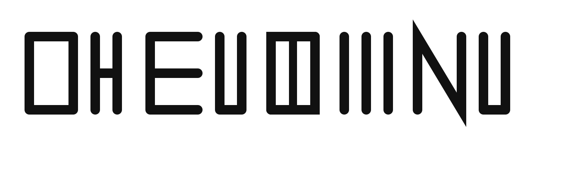
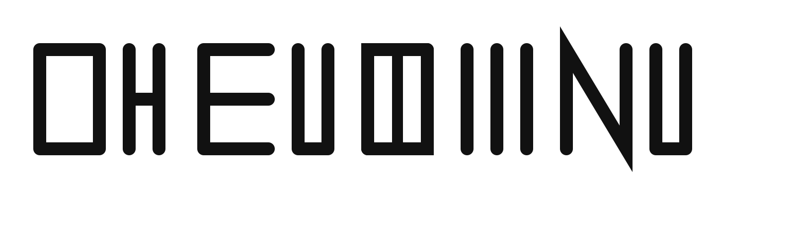
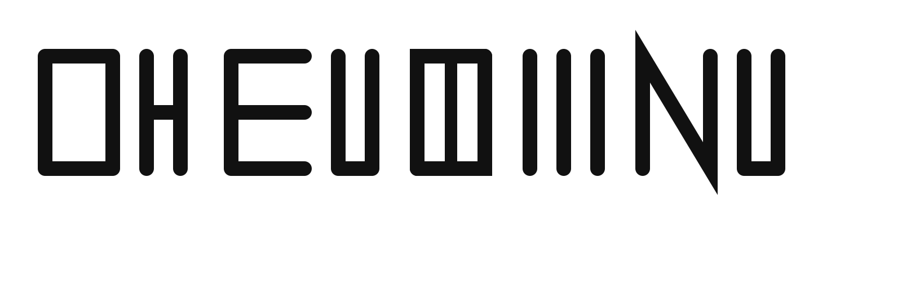

Gateway
Manifest
Philosophy
Music
Vision
Gallery
Embassy
Residents
Gallery
Press conference, New York, 1973
White Flag
Weiße Flagge · PE(A)CE

NO KINGS
 Press conference, New York, 1973
Press conference, New York, 1973
 White Flag
White Flag
 Weiße Flagge · PE(A)CENO KINGS
Weiße Flagge · PE(A)CENO KINGS